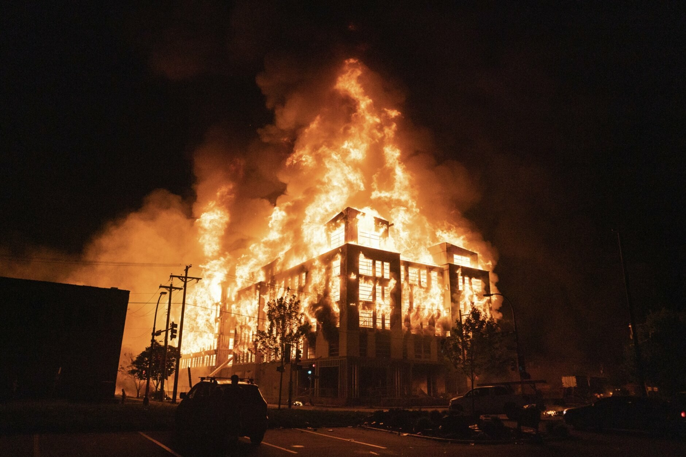

Häppy Börthdäy
Sunnas Super SeriÖse Sause
Hier geht es zu Sunnas Geburtstagsparty. Du kannst direkt loslegen.
Falls du allerdings erst ein Mal schauen möchtest, was dich erwartet, schau dir die nächste Seite an.
Sunnas Super SeriÖse Sause
Hier geht es zu Sunnas Geburtstagsparty. Du kannst direkt loslegen.
Falls du allerdings erst ein Mal schauen möchtest, was dich erwartet, schau dir die nächste Seite an.

Sunnas Super SeriÖse Sause
Du läufst mit einer selbst gewählten 2D-Spielfigur durch eine kleine Welt.
Deine Figur steuerst du mit den Pfeil-Tasten. Wenn du dabei die Shift-Taste drückst, rennt deine Figur.
Bist du in der Nähe einer anderen Figur, startet eine kleine Videokonferenz. Entfernt ihr euch wieder voneinander, wird diese beendet. Das geht maximal zu 4.
Sunnas Super SeriÖse Sause
Es gibt 3 Bereiche. 2 Floors und 1 Chillarea. Du startest in der Chillarea. Auf der Wolke kannst du mit der Leertaste einen großen Videoraum starten. Diesem Videoraum können mehr als 4 Personen beitreten.
Außerdem kannst du im Süden und Westen der Karte durch kleine Löcher hüpfen. So kommst du auf die Dance-Floors.
Genieß' die Party!